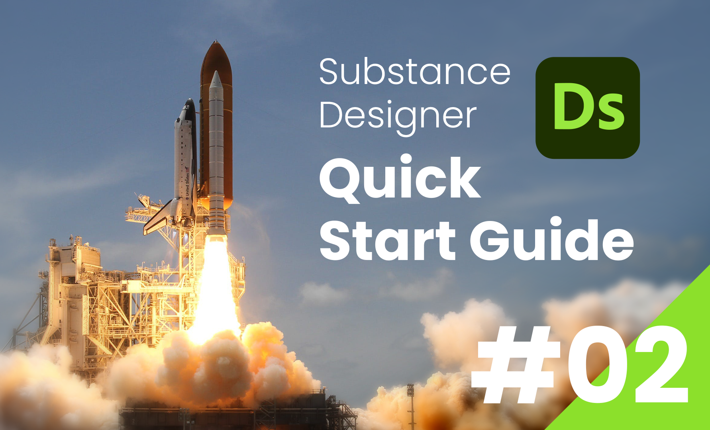
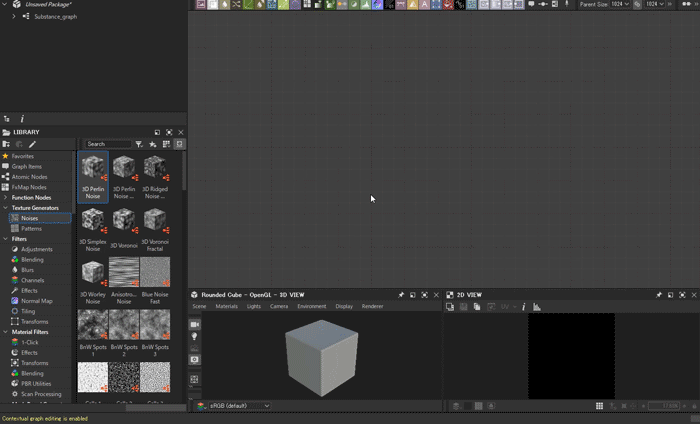
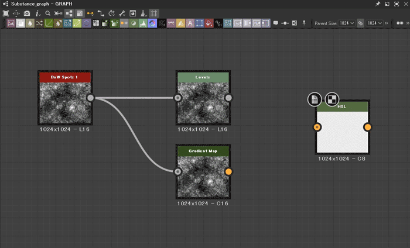

SubstanceDesigner
Substance Designer クイックスタートガイド
第2回：ノード
2024/02/04

前回 は新規パッケージ・グラフを作る方法を解説しました。
今回は、SubstanceDesignerの主要な機能である、ノードについて解説していきます。
はじめに
このコラムでは、SubstanceDesignerの言語設定は「英語」で解説していきます。ある程度SubstanceDesignerを扱えるようになってくると、英語圏のチュートリアルを参考にすることも多く、ノード名などが日本語だと分かりづらくなるためです。
(CG系のソフトは全般、初めから英語に慣れておくに越したことはないですね。)
ノードとは
SubstanceDesignerでは、左→右 (上流→下流) へ ノード を接続してマテリアルを作成していきます。
ノードとは「入力」と「出力」を持った、特定の処理を行う機能のことです。
例えば、Blendノードは「2つの入力を受け取り、合成した結果を出力する」ノードです。
下の例では、加算モードで2つの画像を合成しています。
プロパティ
ノードは、パラメータ で挙動を制御することができます。
ノードをクリックすると、プロパティウィンドウ (画面右) にそのノードのプロパティが表示されます。
Specific Parameters の項目には、ノード固有のパラメータが用意されていて、値を変更することで、そのノードの挙動を制御することができます。
例えば、Blendノードには Blending Mode パラメータがあり、画像の合成モードを指定することができます。
乗算やオーバーレイなど、Photoshopなどの画像合成ソフトではおなじみの合成モードが用意されています。
現在どのノードのプロパティが表示されているかは、グラフビューのノードの左上のプロパティアイコンから確認することができます。
ノードの使い方
ノードの追加
グラフにノードを追加するには、グラフビューに上にマウスカーソルを移動し、Spaceキー を押します。
すると、ノードの一覧が表示されるので、使用するノードをクリックして配置します。
一覧に使用したいノードがない場合は、ノード名を検索バーに入力して検索するか、ライブラリウィンドウ (画面左側) から使用するノードをグラフビューにドラッグ&ドロップします。
ノードの接続
ノードを接続するには、ノードの出力ピンから次のノードの入力ピンにドラッグ＆ドロップしてコネクションを接続します。

コネクションが赤い点線になっている場合は、何らかのエラーで処理できない状態になっています。
上の例では、ノードの「カラーモード」が違うためにエラーが出ています。
接続しているノードのピンを入れ替える場合は、Shift を押しながらピンをドラッグ＆ドロップします。
ノードの接続を解除するには、コネクションを選択した状態でDelete キーを押します。
まとめ
今回は、ノードの基本的な概念・使い方を解説しました。
次回は、ノードを使って実際にグラフを組むワークフローについて解説したいと思います。